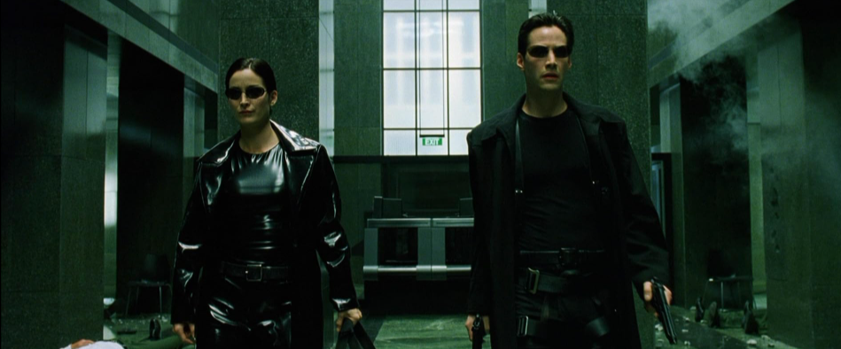

|  | "Não pense que é capaz. Saiba que é. Morpheus - Matrix |
O filme "Matrix" lançado em 1999 é um filme que marcou época. Ele conta a história do Neo, interpretado pelo Keanu Reeves, que é um programador de computadores, mas também um hacker. Ele descobre que a realidade que a gente vive não passa de uma simulação criada por máquinas. O personagem toma um choque com essa realidade.
As cenas de ação são incríveis, com uns efeitos visuais que na época eram muito inovadores. E tem aquela coisa de escolher entre a pílula vermelha ou azul, que é um símbolo da escolha entre ver a verdade ou viver na ilusão. O filme traz umas reflexões sobre liberdade e realidade que fazem a gente pensar mesmo depois que o termina. Matrix é um clássico do cinema que todo mundo deveria assistir!
Aborda temas como realidade, livre-arbítrio e destino e isso faz nós pararmos para pensar sobre a realidade em que vivemos.